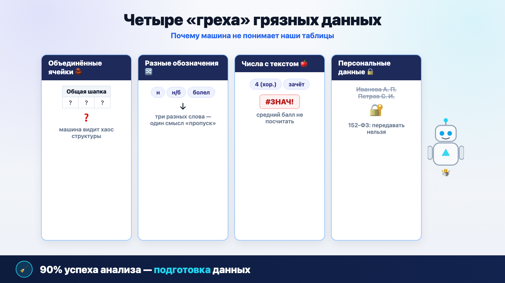
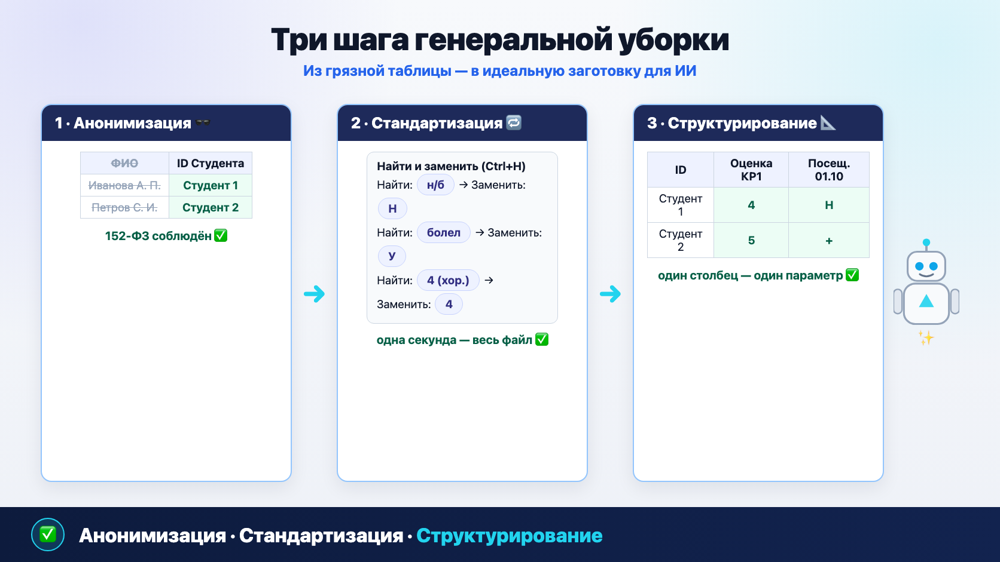
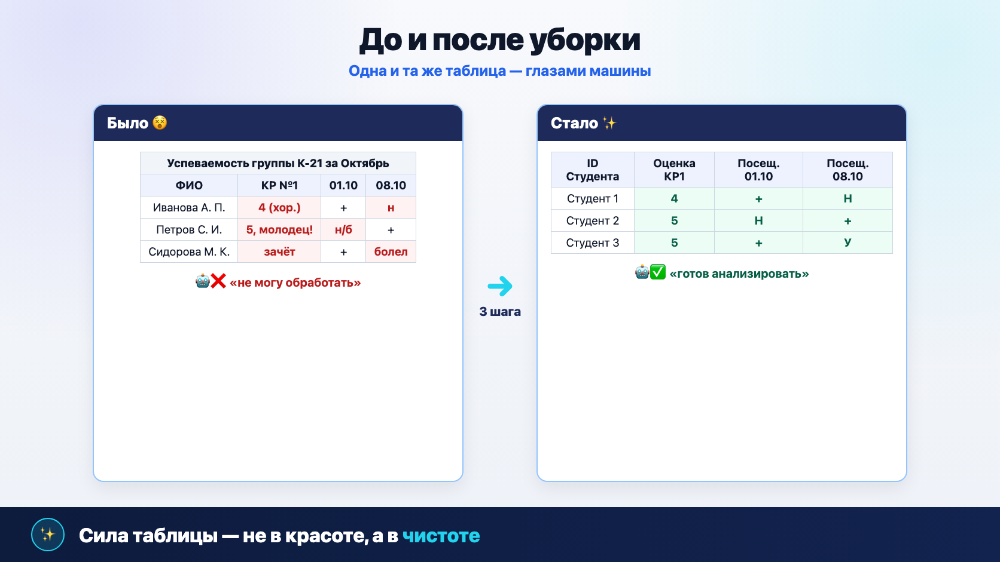
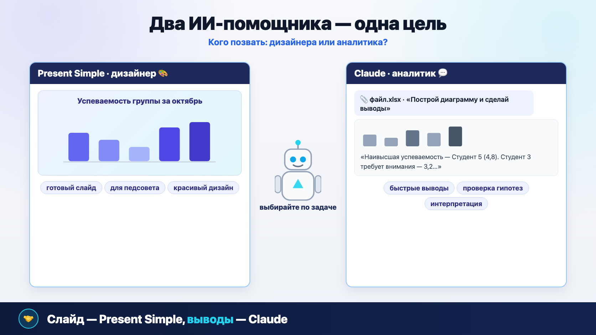
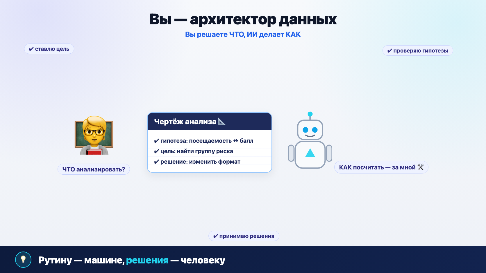

От «педагогического чутья» к доказательной аналитике
На прошлой лекции мы научились видеть паттерны в цифровом следе. Интуиция — это прекрасно. Но что, если вместо «мне кажется, успеваемость падает» у вас будет график, который это доказывает?
Цель — не стать IT-специалистами, а заставить ИИ быть нашим личным, бесплатным и очень быстрым аналитиком. Таблица, над которой вы работали бы полдня, превращается в готовый слайд для педсовета за три минуты.
«Грязные данные»: почему машины нас не понимают
ИИ привередлив: он говорит на языке чистых, структурированных данных. Наша привычная таблица для него — набор ошибок. Четыре «греха»: объединённые ячейки, разные обозначения одного и того же, числа с текстом и персональные данные. 90% успеха анализа — правильная подготовка.

Мастерская данных: три шага генеральной уборки
Не нужно быть программистом: все инструменты уже встроены в Excel и Яндекс Таблицы и осваиваются за 5 минут. Анонимизация → стандартизация → структурирование — и любая таблица готова к передаче ИИ.


Сила таблицы — не в красоте, а в чистоте
Чистая таблица выглядит просто, даже скучно: один столбец — один параметр, одна строка — один студент. Зато её поймёт любой ИИ-сервис. Правило: «Найти и заменить» (Ctrl+H) исправляет все «н/б» на «Н» за одну секунду — не правьте ячейки вручную.
Визуализация с помощью ИИ: два инструмента
Мы не будем строить графики сами — ни кнопок Excel, ни настройки осей. Просто попросим ИИ. Present Simple — «дизайнер»: делает готовые красивые слайды. Claude — «аналитик»: строит диаграмму прямо в чате и сам пишет выводы.
🎨 Present Simple — ИИ-дизайнер
Вставляете данные из Excel в слайд, выбираете тип диаграммы, пишете задание на русском — получаете профессионально оформленный слайд за 30 секунд. Вручную такой делали бы 20–30 минут.
💬 Claude — ИИ-аналитик
Прикрепляете чистый файл скрепкой, пишете запрос — получаете диаграмму прямо в чате и текстовые выводы: кто лидирует, кому нужно внимание, есть ли корреляция.
На основе загруженного файла создай, пожалуйста, столбчатую диаграмму, которая показывает средний балл каждого студента за октябрь. Сделай заголовок «Успеваемость группы за октябрь».
Проанализируй, пожалуйста, прикреплённый файл. Построй столбчатую диаграмму, которая сравнивает средние баллы студентов, и сделай короткие текстовые выводы: кто лидирует, кому нужно внимание.
А теперь построй диаграмму рассеяния, чтобы проверить, есть ли корреляция между посещаемостью и средним баллом.
Честная оговорка про доступ из России Официальной регистрации и оплаты Claude из РФ нет. Хорошая новость: те же промпты отлично работают в GigaChat, Алисе с YandexGPT и DeepSeek — все они строят диаграммы по загруженному файлу и дают текстовые выводы. Present Simple — российский сервис, работает без ограничений. И помните главное правило из лекции 4.1: во внешний сервис — только обезличенные данные.

Вы — архитектор данных
Главный вывод лекции — не «какую кнопку нажать», а как меняется ваша роль. Вы решаете, ЧТО анализировать и какую гипотезу проверить. Всю техническую работу — КАК посчитать и нарисовать — берёт на себя ИИ.
Раньше: исполнитель рутины
- Сборщик данных по журналам и файлам
- «Чистильщик» таблиц вручную
- Оператор формул Excel
- Дизайнер диаграмм по 30 минут на слайд
Теперь: архитектор данных
- Ставите цель: что сделать видимым
- Формулируете гипотезы
- Интерпретируете результаты
- Принимаете педагогические решения

Чек-лист: готовы ли вы к практике
На практике каждый получит «грязную» таблицу, очистит её своими руками и построит первые ИИ-диаграммы в Present Simple и Claude. Подготовьтесь заранее — прогресс сохраняется в этом браузере.
Все пункты отмечены — на практике будете быстрее всех!
Проверьте себя
Пять вопросов по материалу лекции — ответьте и посмотрите разбор.
1. В столбце оценок встречается «4 (хор.)». Почему ИИ не может посчитать средний балл?
2. С какого шага начинается очистка таблицы и почему?
3. Как быстрее всего заменить все «н/б» на «Н» во всей таблице?
4. Нужен готовый красивый слайд для педсовета. Какой инструмент выбрать по логике лекции?
5. Что означает роль «архитектор данных»?
Отвечено: 0 / 5
Заключение: цифры превращаются в истории
- Наши привычные таблицы — «грязные данные» для машины: она видит хаос там, где мы видим порядок
- Три шага уборки: анонимизация, стандартизация, структурирование — и файл готов для любого ИИ
- Слайд для презентации — Present Simple; быстрые выводы и проверка гипотез — Claude или его доступные аналоги
- Ваша новая роль — архитектор данных: вы ставите цель, ИИ делает рутину
- Освобождённое время — на главное: интерпретацию и педагогические решения
На практике каждый получит «грязную» таблицу, проведёт её очистку шаг за шагом и своими руками построит первые ИИ-диаграммы — сравнив оба инструмента в деле.
← Лекция 4.1 «Цифровой след: методы сбора и анализа» — с чего всё началось